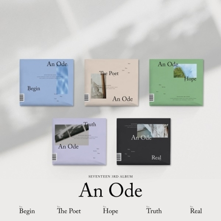

[세트] 세븐틴 - 헹가래 (7TH 미니앨범) (하나 + 둘 + 셋 + 넷 Ver. = 4종 세트)
그룹 세븐틴이 오는 22일, 약 9개월 만에 미니 7집 [헹가래]를 발매한다.
세븐틴의 이번 앨범 [헹가래]는 정규 3집 [An Ode]에서 마주했던 ‘두려움’의 감정에서 벗어나 ‘꿈’을 가지고 다시 한번 새로운 세상으로 함께 나아가자는 힘찬 에너지를 담았으며 꿈을 향해 도전하는 청춘에게 응원의 메시지를 전하는 앨범이다.

[세트] 세븐틴 - 3집 [AN ODE] (Ver.1 + 2 + 3 + 4 + 5 = 5종으로 발송)
세븐틴, 탄탄하고 성숙해진 완성형 음악 선사...정규 3집 [An Ode] 발매!
세븐틴, 정규 3집 [An Ode] 발매…‘세븐틴이 보내는 선율’!
세븐틴, 9월 16일 정규 3집 [An Ode] 발매! 타이틀 곡 치명적 매력의 ‘독:Fear’!
세븐틴, 1년 10개월만의 정규 앨범 발매 [An Ode]! 세븐틴 작사·작곡 참여!
[세트] 세븐틴 - YOU MAKE MY DAY (5TH 미니앨범) [MEET VER / FOLLOW VER / SET THE SUN VER = 3종으로 발송]
SEVENTEEN 5TH MINI ALBUM ‘YOU MAKE MY DAY’
음악적 성장과 함께 돌아온 세븐틴, 청춘의 감정 녹여낸 YOU MAKE MY DAY 발매!
세븐틴, 성숙해진 청량美로 돌아왔다! 5개월 만에 타이틀곡 ‘어쩌나’로 전격 컴백!